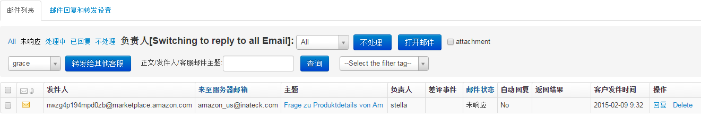
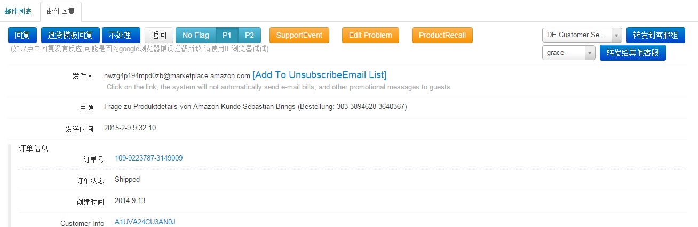
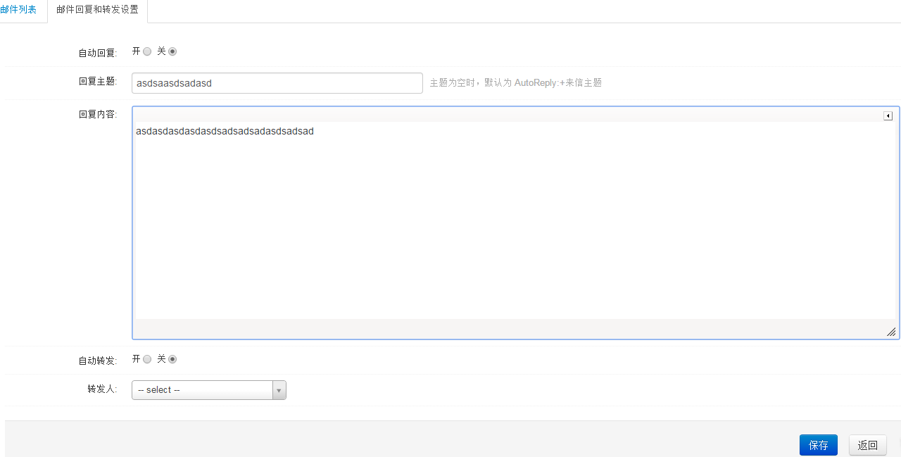

收件箱
邮件列表

- 选择负责人,查看分配给相应负责人的邮件,勾选attachment,查看有附件的邮件信息
- 勾选邮件列表,点击不处理按钮可以处理重复的邮件、打广告邮件等，点击打开邮件按钮查看邮件详细内容及订单信息
- 勾选邮件列表,选择客服,点击转发给其他客服按钮,可以把相应邮件转给其他客服处理
- select the filter tag,查看相应邮件标记下邮件
- 点击操作列回复链接,进入邮件回复界面。
点击回复按钮可以回复邮件，有些不用回复的就可以点不处理（比如重复的邮件，打广告的什么的）;退货模版是,亚马逊那边如果给客人退货了会给我们发一封信提示说给这个客人退了多少钱，一般我们就点退货模版问客人退货的原因;
support event是给客人发替代的;Edit Problem是用来记录客人说的这个产品的问题的;Product recall是建立事件召回有些要召回的产品的;P1,P2标记邮件;
转到客服组，是转到那个国家，比如转到DE Customer Service就是转到德国这个客服组然后系统随机分给负责德国客服的人;转到其他客服就是确定转给谁就是谁

邮件回复和转发设置
